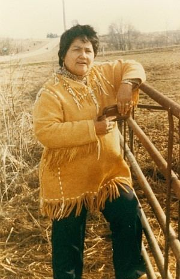
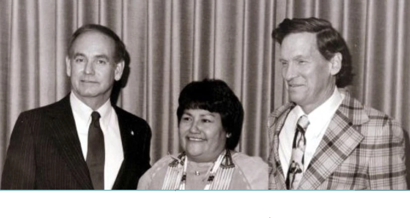
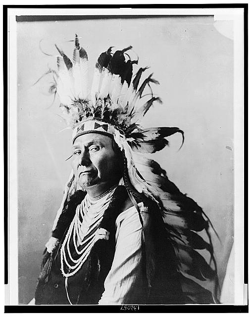

The Native American Graves Protection and Reparation Act is a federal law that requires Federal Agencies and institutions that receive fed funds to repatriate or transfer native American human remains and other culturally significant items to the appropriate parties. Cultural items include human remains, funerary objects, sacred objects, and objects of cultural patrimony. NAGPRA was enacted November 16th, 1990, by Maria Pearson, a member of the Yankton Sioux tribe of Iowa, who supported the equal treatment of all people, especially Indigenous North Americans. (US Senate Report 101-473).
The NAGPRA process goes beyond legal obligation. Repatriation is an integral ethical step towards reconciliation and restorative justice. By working with empathy and respect for both ancestors and communities, we can better support cultural continuity and facilitate overdue decolonization. Through collaborative work, we can build relationships and foster community that works towards creating a more ethical world.
This site provides a history with case study examples, and a comprehensive resource list for NAGPRA practitioners and students.
The importance of NAGPRA within the United States is due to the oppression and colonization of Indigenous North Americans. Communities across the United States have felt the full impact of colonization, one key aspect of these impacts were the loss of heritage in the form of artifacts and other cultural items not being accessable and unable to be reclaimed.

On October 26, 1990 the initial NAGPRA legislation was passed. Within this initial legislation, the bill states that if Native American artifacts or remains are found on Federal or Tribal land, then ownership would be transferred to the rightful ancestor, and if no ancestor claims the artifact(s) or remains, it goes to the associated tribe of the area.
In 1971, a highway construction project unearthed a total of 28 human remains. Within the 28 total, there were remains of 26 white pioneers, one indigenous woman, and one indigenous infant. The 26 pioneers were reburied relatively quickly, while the indigenous remains were sent to a state archeologist. Maria Pearson, a member of the Iowa Turtle Clan of the Yankton Sioux, caught wind and was furious. There was no law to protect ancient burial sites within the United States and Maria wanted to change that. Maria then staged a protest at the state capitol and requested an audience with Governor Robert D. Ray. After meeting with the Governor, the Indigenous remains were quickly reburied along with the white remains. After that Maria met with legislators, archeologists, anthropologists, physical anthropologists, and tribal members to spur legislation guaranteeing equal treatment of non-Indian and native American remains.

There are many useful resources for NAGPRA practioners, and here we provide a list of some resources that may be useful.
Videos are also a good source of information, and can make your web page more interesting to look at. Your first option for sharing videos is to link out to a video hosting service like YouTube or Vimeo. But, oftentimes, you will want the video directly in your web page. You can do this by either emedding from a video service, or by putting a video file in your repository. There are advantages and disadvantages to both.
Embedding from a video hosting service like YouTube is convienant, and doesn't take up any space on your server or github account. Here is how to embed a YouTube video into your project file!
If you have your own mp4 video that you want to embed into your web page, without linking to it on YouTube, you can do that too. This has the advantage of not giving YouTube rights to your video, while also making sure that you video will not be taken down from the internet (because you'll refer to it in your img folder (if you were a super stickler, you could create a video folder and refer to it in there.))
Libero id faucibus nisl tincidunt. Tempus quam pellentesque nec nam aliquam sem. Suspendisse interdum consectetur libero id faucibus. Convallis convallis tellus id interdum velit laoreet id. Platea dictumst vestibulum rhoncus est pellentesque elit ullamcorper dignissim. Lobortis elementum nibh tellus molestie nunc. Pellentesque elit eget gravida cum sociis natoque penatibus et. Massa tincidunt nunc pulvinar sapien et ligula ullamcorper malesuada. Auctor elit sed vulputate mi. Quis commodo odio aenean sed adipiscing diam donec. Et netus et malesuada fames ac turpis egestas sed.

Nullam vehicula ipsum a arcu cursus vitae congue. Ut placerat orci nulla pellentesque dignissim enim. Viverra mauris in aliquam sem fringilla ut morbi tincidunt. Pulvinar elementum integer enim neque volutpat ac tincidunt vitae semper. Egestas tellus rutrum tellus pellentesque eu tincidunt tortor. Mi ipsum faucibus vitae aliquet nec ullamcorper sit. Quam id leo in vitae turpis massa sed elementum. Urna nunc id cursus metus aliquam eleifend mi. Nibh mauris cursus mattis molestie a iaculis at erat. Id eu nisl nunc mi ipsum faucibus vitae.
Senectus et netus et malesuada fames ac turpis. Pretium nibh ipsum consequat nisl vel pretium lectus quam. Purus sit amet luctus venenatis. Sed elementum tempus egestas sed sed risus pretium quam. Adipiscing bibendum est ultricies integer quis auctor elit sed vulputate. Elementum nisi quis eleifend quam adipiscing vitae proin sagittis. Ac turpis egestas integer eget aliquet nibh praesent tristique magna. Nunc lobortis mattis aliquam faucibus purus in massa tempor nec. Purus ut faucibus pulvinar elementum. Tempor commodo ullamcorper a lacus. Tortor aliquam nulla facilisi cras fermentum odio. Adipiscing commodo elit at imperdiet. Sapien faucibus et molestie ac. Posuere morbi leo urna molestie.
Image 1: Sitting Bull. c1884. photographed and published by Palmquist & Jurgens, St. Paul, Minn. Obtained on 2/17/22 from https://www.loc.gov/item/94500412/
Image 2: Chief Joseph, Nez Percé. 1900. Photographed by Gill, De Lancey. Obtained on 2/17/22 from https://www.loc.gov/item/2002719520/.